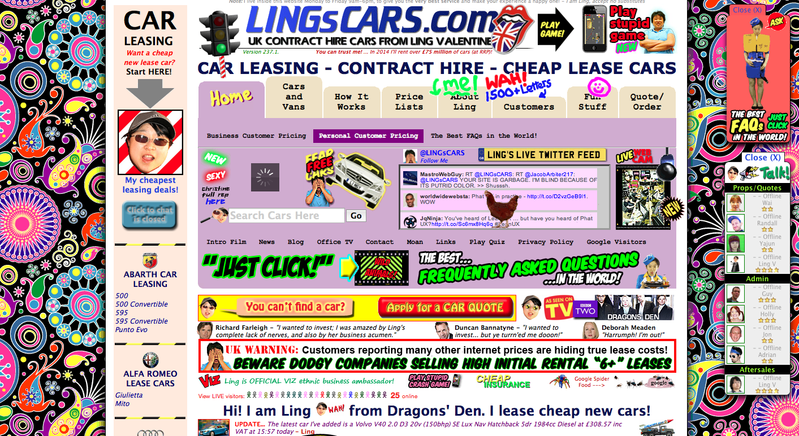

Here are two examples of websites that I consider to be good and bad.
This site is simple and clean and presents the viewer with a large picture. Rather than cluttering the home page with lots of info, the tags are hidden under buttons.

This site is cluttered, hard to navigate and overwhelming. I have no idea what is going on.